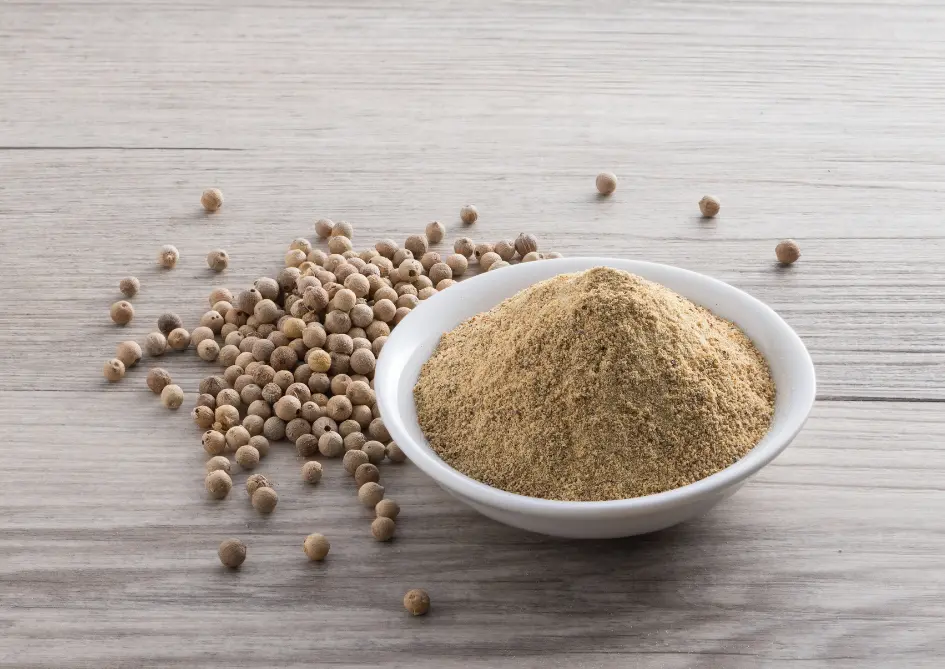

Ceylon White Pepper
Elegant & Mild Sri Lankan White Pepper
Discover the smooth, creamy heat of Ceylon White Pepper, crafted from fully ripened black pepper berries with the outer skin removed. Naturally soaked, peeled, and sun-dried, our white pepper is lighter in appearance and milder in heat—perfect for gourmet dishes where color and subtle flavor matter.
Key Product Highlights
- Origin: Matale, Sri Lanka (Estate-processed)
- Processing: Soaked, peeled, and sun-dried
- Flavor Profile: Mild heat, creamy texture, earthy aroma
- Applications: White sauces, creamy soups, eggs, light curries

Product Specifications
| Specification | Details |
|---|---|
| Scientific Name | Piper nigrum |
| Origin | Matale, Sri Lanka |
| Form | Whole White Peppercorns |
| Piperine Content | 3–4% |
| Moisture | <12% |
| Color | Off-white to pale grey |
| Packaging | 100g | 250g | 1kg resealable packs |
| Shelf Life | 18 months |
How to Use Ceylon White Pepper
In Cuisine
Use in white sauces, mashed potatoes, and dishes where visual appeal is important. Mild flavor complements creamy dishes perfectly.
In Blends
Combine with other spices in gourmet blends or spice rubs for poultry and seafood.
Storage
Keep in airtight containers away from light and moisture to preserve freshness and aroma.
Elevate your recipes with the elegance of Ceylon White Pepper.
Frequently Asked Questions
How is white pepper different from black pepper?
White pepper is made from fully ripened berries with the outer black skin removed, offering a lighter flavor.
Does it have the same heat as black pepper?
White pepper is milder and creamier in flavor compared to the sharp heat of black pepper.
Is it safe for daily use?
Yes. It’s low in moisture and microbial content, making it safe for regular culinary use.
Do you provide wholesale packaging?
Yes, bulk orders and private label options are available upon request.